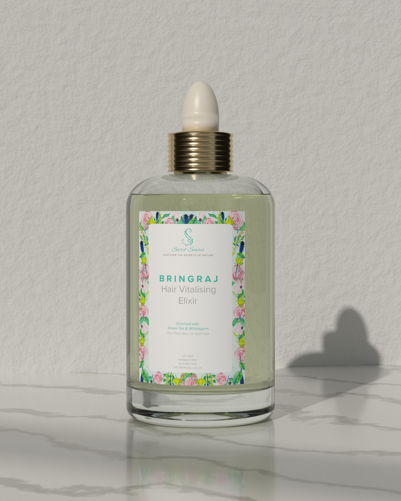
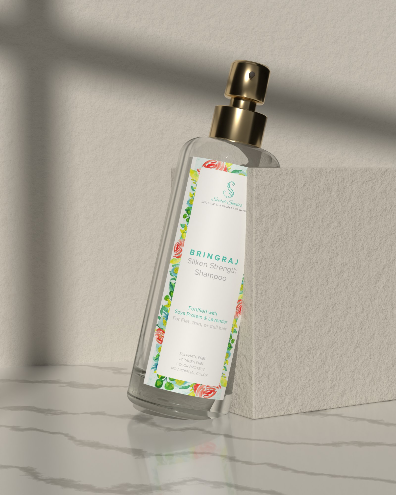
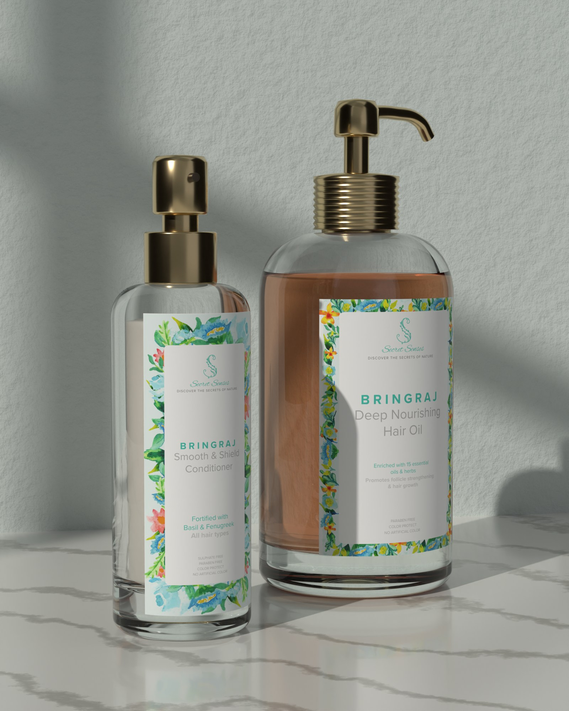
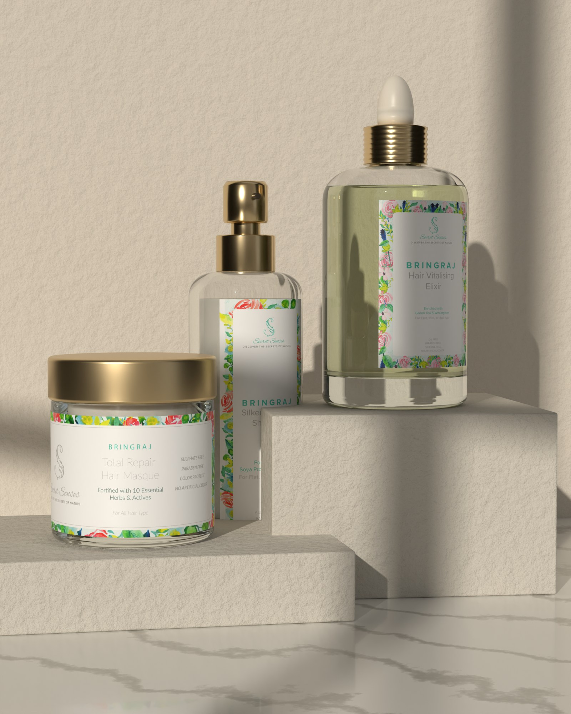
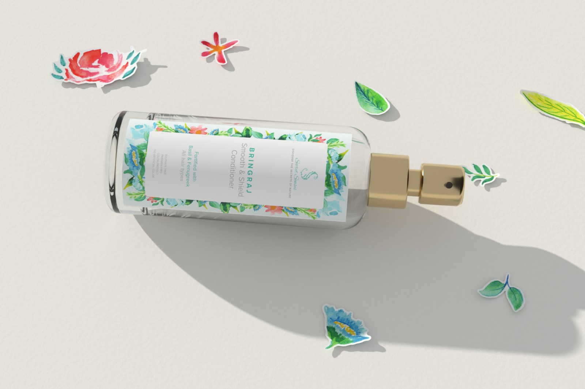
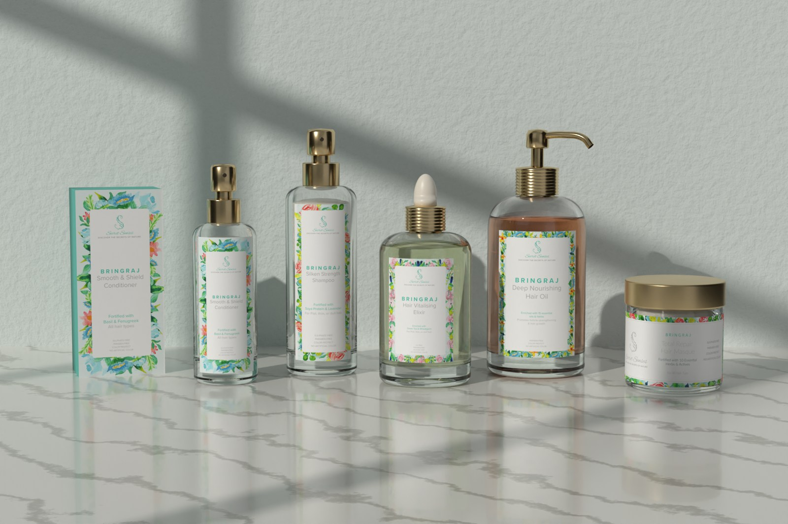

Study 60 · 2 November 2026
Secret Senses, thick glass
Study 58's poses, light and labels. Only the material changes: heavy glass, gold metal.










Study 60 · 2 November 2026
Study 58's poses, light and labels. Only the material changes: heavy glass, gold metal.





